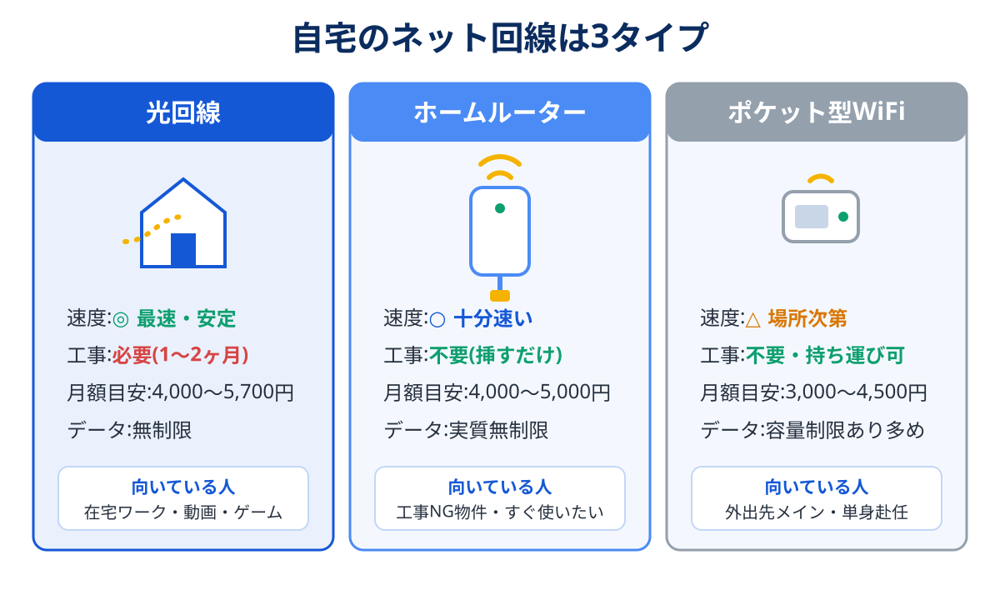

「光回線の工事ができない」「工事を待てない、今週からネットが要る」——そんなときの答えが、コンセントに挿すだけで使えるホームルーター(工事不要WiFi)です。
5G対応が進んだ今のホームルーターは、正直、数年前とは別物です。普段使いなら光回線の代わりが十分務まります。この記事では主要3サービスの違いと、ポケット型との使い分けまでを整理します。
ホームルーターはスマホのキャリアに合わせるのが基本。ドコモ → home 5G / au・UQ → WiMAX / ソフトバンク・ワイモバイル → ソフトバンクエアー。外にも持ち出したいならホームルーターではなくポケット型WiFi(WiMAX系)を選びましょう。
ホームルーターとは?光回線との違い
ホームルーターは、スマホと同じモバイル回線(4G/5G)を使う据え置き型のWi-Fi機器です。届いたその日、コンセントに挿して数分で開通します。

- 光回線より優れる点:工事不要・即日開通・引越しに強い(住所変更だけで継続利用)
- 光回線に劣る点:電波環境に速度が左右される・上り(アップロード)が弱め・遅延がやや大きい
- 動画・SNS・Web会議・在宅ワーク → 十分快適
- 対戦ゲーム(FPS等)・大容量アップロード → 光回線推奨(比較はこちら)
主要3サービスの比較表
| サービス | 月額目安(税込) | 回線 | データ容量 | セット割 |
|---|---|---|---|---|
| ドコモ home 5G | 4,950円 | ドコモ 5G/4G | 無制限(公平制御あり) | ドコモスマホ最大1,100円/月 |
| WiMAX +5G | 4,300〜5,000円 (窓口により変動) |
au 5G/4G+WiMAX 2+ | 実質無制限(公平制御あり) | au・UQスマホ最大1,100円/月 |
| ソフトバンクエアー | 5,368円 (割引期間は3,000円台) |
ソフトバンク 5G/4G | 無制限(公平制御あり) | SB・ワイモバ最大1,650円/月 |
※「公平制御」=ネットワーク混雑時に速度制限がかかる場合がある、の意。常識的な使い方で制限されることはまれです。
3サービスの詳細レビュー
ドコモ home 5G
NTTドコモ
ホームルーター界の優等生。ドコモの5G/4G網をそのまま使うため、対応エリアの広さと安定感が頭ひとつ抜けています。データ実質無制限で、ドコモスマホとのセット割も対象。「ホームルーターは遅い」というイメージは、5Gエリアのhome 5Gを使うと覆ると思います。端末代は分割相当額の割引で実質無料になる購入方法が主流です。
- エリアと安定性が最強クラス
- ドコモとのセット割対象
- 縛りなし(端末残債には注意)
- 月額はホームルーターでは高め
- 登録住所以外では利用不可
※ 5G対応エリアかどうかを先に確認するのがおすすめです
WiMAX +5G(ホームルーター)
UQコミュニケーションズ(販売はプロバイダ各社)
au 5G/4G+WiMAX 2+回線のホームルーター。特徴は販売窓口(プロバイダ)が多数あり、キャッシュバックや月額割引の競争が起きていること。同じ回線・同じ端末でも窓口次第で2年総額が1万円以上変わるため、比較の価値が大きいサービスです。au・UQスマホとのセット割にも対応。同じ契約でポケット型端末を選べるのも柔軟です。
- 窓口競争で実質料金を下げやすい
- au・UQのセット割対象
- ポケット型も同じ契約体系で選べる
- 窓口ごとの条件比較がやや面倒
- 建物の奥まった部屋では電波が弱いことも
※ 実質月額(総額÷契約月数)で窓口を比べるのがコツです。窓口の違いはWiMAXプロバイダ比較で詳しく解説しています
ソフトバンクエアー(Airターミナル)
ソフトバンク
ソフトバンク・ワイモバイルユーザーの「おうち割 光セット」対象で、ワイモバイルとの組み合わせは割引額が大きく強力。割引期間中の月額が安く設定されるキャンペーンが恒例です。最新のAirターミナルは5G対応で速度も大きく改善しました。スマホがSB系なら、光回線を引くまでのつなぎにも本命にもなります。速度に不満が出たときはソフトバンクエアーが遅いときの対策で、置き場所の見直しから乗り換えまでを段階的に整理しています。光回線の開通待ちに使う場合は開通までのつなぎWiFiの選び方もあわせてどうぞ。
- ワイモバイルとのセット割が強い
- 割引期間中の月額が安い
- 割引終了後の月額を必ず確認
- 端末は分割購入が基本(残債に注意)
ポケット型WiFiとの使い分け
「家でも外でも使いたい」ならポケット型ですが、選ぶ前に1つだけ考えてください——本当に外で、スマホのテザリング以上の容量が要りますか?
- 外での利用が毎日数時間ある(カフェ作業・出張・現場仕事)→ ポケット型の価値あり。容量に強いWiMAX系が第一候補
- 外ではたまに使う程度 → スマホの大容量プラン+テザリングの方がシンプルで安いことが多い(格安SIM比較参照)
- 家がメイン → 迷わずホームルーター。アンテナ性能が高く、同じ回線でも安定します
契約前の注意点3つ
① 設置予定場所の対応エリアを必ず確認
各社公式のエリアマップで、自宅住所がその回線の(できれば5Gの)エリア内かを確認してから申し込みましょう。建物の構造によっては、窓際に置くだけで速度が数倍変わります。
② 「初期契約解除(8日以内)」を保険にする
電波を使う以上、実際の速度は住所ごとのガチャ要素があります。届いたら最初の週末に速度を測り、生活に耐えないレベルなら8日以内の初期契約解除制度で仕切り直す。この保険を前提に試すのが賢い使い方です。
③ 端末代の残債ルールを確認
「端末実質無料」は分割相当の割引で相殺する方式が主流のため、途中解約すると端末残債が請求されます。割引が何ヶ月続く設計なのかを契約前に見ておきましょう。
よくある質問
ホームルーターは光回線の代わりになりますか?
引越し先でも使えますか?
速度が不安。試せますか?
まとめ:スマホに合わせて選び、8日以内に見極める
- ドコモ → home 5G / au・UQ → WiMAX / SB・ワイモバ → エアー
- 外でも使うならポケット型WiMAX、家メインならホームルーター
- 届いたら最初の週末に実測。合わなければ8日以内に判断
- 速度に妥協したくなくなったら光回線へステップアップ
- 各社公式サイトの料金・エリア・端末情報(2026年8月確認)
- 総務省「電気通信事業法に基づく初期契約解除制度」の解説ページ
- 運営者自身のホームルーター利用経験(WiMAX系・自宅実測)